In this document formulas are derived for the Doppler shift in various cases.
Assume we have a medium in which waves are transmitted with a frequency of f0 and propagate with velocity vw relative to the medium. If the wave transmitter is at rest relative to the medium, the wavelength everywhere in the medium will be:
Equation 1:
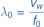If the receiver is moving with velocity vRx relative to the medium and in the direction of the transmitter, then the receiver's velocity relative to the waves will be:
Equation 2:
Thus, the received waves will have the apparent frequency:
Equation 3:
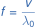By substituting Equation 1 and Equation 2 into Equation 3, we obtain the following expression for the apparent frequency:
Equation 4:
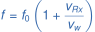This can be rewritten to express the relative Doppler shift:
Equation 5:
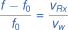Keep in mind that the velocities vw and vRx are relative to the medium.
Now let's assume that the transmitter is moving with velocity vTx relative to the medium and towards the receiver, which is at rest relative to the medium. The wavelength in front of the transmitter will be reduced by the distance it travels during one wave period T0 (=1/f0), so the wavelength becomes:
Equation 6:
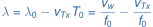The received waves will therefore have the apparent frequency:
Equation 7:
By substituting Equation 6 into Equation 7, we obtain the following expression for the apparent frequency:
Equation 8:
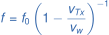And the relative Doppler shift becomes:
Equation 9:
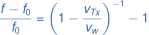When vTx is small compared to vw, Equation 8 and Equation 9 become similar to the stationary transmitter case (Equation 4 and Equation 5) as shown below:
Equation 10:
Equation 11:
If both the transmitter and the receiver are moving relative to the medium and towards each other with the velocities vTx and vRx, respectively, relative to the medium, then the wavelength λ will be described by Equation 6, and the receiver's velocity v relative to the waves will be described by Equation 2. For the receiver the waves will therefore have the apparent frequency:
Equation 12:
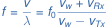and the relative Doppler shift:
Equation 13:
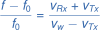When vRx and vTx are small compared to vw, these equations can be simplified to:
Equation 14:
Equation 15:
Note that vTx and vRx should have the same sign when they are pointed in opposite directions. vw should always be positive.
For electromagnetic waves it is not necessary to relate the motion of the transmitter, receiver, and waves to a medium. Only the velocities relative to the receiver are important. If the velocity vTx of the transmitter relative to the receiver (and towards it) is much smaller than the velocity vw of the waves (which is 299,792,458 m/s in a vacuum), we can reuse Equation 10 and Equation 11, regardless of whether the receiver is moving or not:
Equation 16:
Equation 17:
Remember that in this case vTx is the transmitter's velocity relative to the receiver - not relative to the medium. Equation 16 and Equation 17 could of course also be obtained by setting vRx=0 in Equation 14 and Equation 15, respectively.
If the transmitter velocity vTx is not small compared to the electromagnetic wave velocity vw, relativistic effects (according to Einstein's Theory of Relativity) will be non-negligible and need to be taken into account. In this case, time dilation will reduce the transmitted frequency f0 in Equation 8 by the Lorentz factor γ when observed from the receiver's frame of reference (before accounting for the Doppler shift). The Lorentz factor is determined by the transmitter's velocity vTx relative to the receiver as follows:
Equation 18:
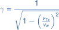Replacing f0 in Equation 8 with the time dilated value f0/γ, we get the combined result of time dilation and Doppler shift:
Equation 19:
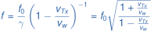Equation 20:
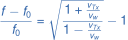(vTx is the transmitter's velocity relative to the receiver and towards the receiver, and vw is the electromagnetic wave velocity).